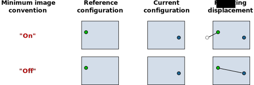

Displacement vectors

This modifier calculates the displacement vectors of particles from two snapshots of the system: a reference (or initial) configuration and a current configuration. The displacement vector of a particle is computed by subtracting its reference position from its current position.
The modifier considers the currently present particle positions as the current configuration. The reference particle positions are by default taken from frame 0 of the loaded animation sequence (option Upstream pipeline). Alternatively, the modifier supports loading the reference particle positions from a separate data file (option External file).
Modifier outputs
The modifier outputs the calculated displacement vectors as a new particle property named Displacement (XYZ).
This particle property supports visualization of the vectors using arrow glyphs.
To show the arrows in the viewports, you need to turn on the associated vector display.
Alternatively, you can add a Color coding modifier to the pipeline to
visualize the displacements by means of varying particle colors. The modifier
additionally outputs the Displacement Magnitude particle property for this purpose, which describes the
displacements in terms of scalar values.
Reference positions
By default, the modifier obtains the reference particle positions from the currently loaded simulation trajectory by evaluating the data pipeline at animation timestep 0. This default mode is denoted as Constant reference configuration in the user interface. If desired, OVITO allows you to pick an animation frame other than 0 as reference.
Alternatively, you can let OVITO calculate incremental displacements using the option Relative to current frame. In this mode, a sliding reference configuration is used, based on a relative time offset with respect to the current configuration. Negative offsets correspond to a reference configuration preceding the current configuration in time. An offset of -1, for example, lets OVITO use the animation frame immediately preceding the current frame as reference. Note that, in this case, displacement calculation fails at frame 0, because there exists no preceding frame.
If you want to load the reference particle positions from a separate file instead of taking them from the currently loaded trajectory, you can select External file as data source. Activating this option will show an additional panel Reference: External file allowing you to pick the file containing the initial particle positions.
Particle identities
In order to calculate displacement vectors OVITO needs to establish a one-to-one mapping between the particles in the reference
and the current configuration. If the particles have a property named Particle Identifier,
then OVITO will use these identifiers to generate the one-to-one mapping. In other words, if the particles possess unique identifier, then
OVITO is able to handle changes in the storage order of particles. However, if particles do not possess unique identifiers, then the modifier requires that
the reference configuration contains exactly the same number of particles as the current configuration
and it assumes that the storage order is the same in both configuration. This assumption is not always correct as some simulation
codes reorder particles during a simulation run for performance reasons.
Caution
If you forget to dump particle/atom IDs during your simulation,
you should be aware that OVITO may compute wrong displacement vectors if the particle storage order changes.
Some simulation file format enforce a constant storage order and some do not (e.g. the LAMMPS file formats).
Use the Data inspector to check whether the Particle Identifier property exists after file import.
Affine mapping of the simulation cell
Note: This option applies to systems with periodic boundary conditions. For non-periodic systems (and typically also for systems with mixed boundary conditions) it should remain turned off.
The Affine mapping setting controls how OVITO treats situations in which the shape or volume of the periodic simulation cell changes from the initial to the current configuration. Such a cell change typically occurs in simulations due to active straining or pressure/stress relaxation. Because the calculation of displacement vectors is ambiguous in such situations, the Affine mapping option lets you control the precise calculation method.
If affine mapping is turned off (the default), displacements are calculated simply by subtracting the initial particle position from the current position. Any change of the simulation cell geometry is ignored.
The option To reference performs a remapping of the current particle positions into the reference simulation cell before calculating the displacement vectors. For that, OVITO computes an affine transformation from the current and the reference simulation cell geometry and applies it to the particle coordinates. This mode may be used to effectively filter out contributions to the particle displacements that stem from the macroscopic deformation of the simulation cell, retaining only the internal (non-affine) displacements of the particles.
The option To current performs the opposite: It transforms the particles of the reference configuration to the current configuration first before calculating the displacements. It does that by applying the affine transformation that is given by the simulation cell shape change.
The following table visualizes the effect of the three mapping options on the resulting displacement vector of an exemplary particle.

Minimum image convention
This option tells OVITO whether or not to use the minimum image convention when calculating the displacement vectors for systems with periodic boundary conditions. You should deactivate this option if you work with unwrapped particle coordinates. In this case OVITO assumes that particle trajectories are all continuous. On the other hand, if you work with wrapped particle coordinates, this option should be turned on. The minimum image convention ensures that displacements are calculated correctly even when particles cross a periodic boundary of the cell and were mapped back into the cell by the simulation code. On the other hand, if you intend to calculate displacements vectors that span more than half of the simulation box size, then the minimum imagine convention cannot be used. You must use unwrapped coordinates in this case, because large displacements would otherwise be folded back into the periodic cell thanks to the minimum image convention.
The following figure shows the effect of the option:
{kind=link}
Note: For cell directions without periodic boundary conditions, the minimum image convention is never used.
See also
Atomic strain modifier
ovito.modifiers.CalculateDisplacementsModifier(Python API)